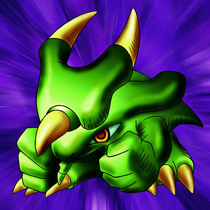

Torike

STATS
ATK: 1200
DEF: 600DECK COST
Deck Cost per Card: 18Fusion List (18 Possible Fusions)
- Torike + Arlownay = Nekogal #2
- Torike + Cyber Commander = Dice Armadillo
- Torike + Dragoness the Wicked Knight = Tiger Axe
- Torike + Flame Ghost = Flame Cerebrus
- Torike + Greenkappa = Tiger Axe
- Torike + Happy Lover = Garvas
- Torike + Kagemusha of the Blue Flame = Flame Cerebrus
- Torike + Key Mace = Nekogal #2
- Torike + Living Vase = Flower Wolf
- Torike + M-Warrior #1 = Tiger Axe
- Torike + Man-Eating Plant = Flower Wolf
- Torike + Mavelus = Flame Cerebrus
- Torike + Magician of Faith = Nekogal #2
- Torike + Mystical Elf = Nekogal #2
- Torike + Nemuriko = Nekogal #2
- Torike + Patrol Robo = Dice Armadillo
- Torike + Queen's Double = Nekogal #2
- Torike + Rainbow Flower = Flower Wolf